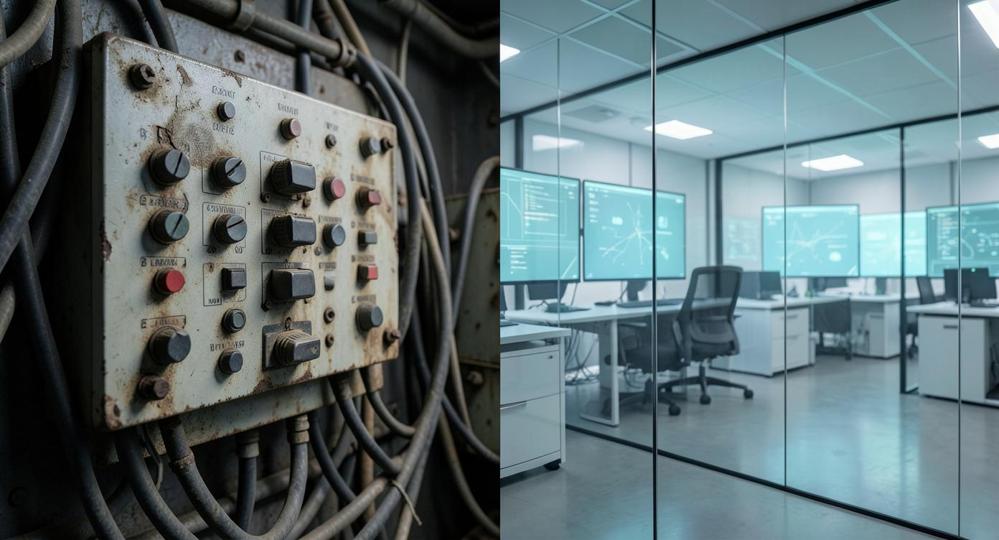
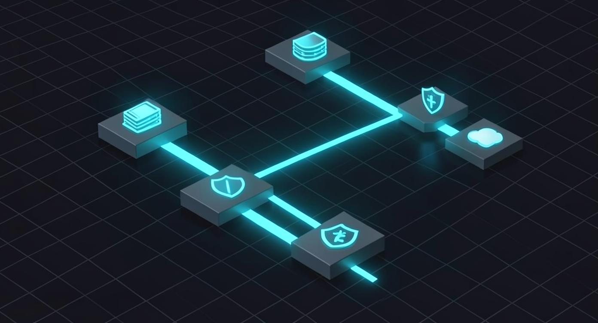

Legacy System Modernization: Cost, Strategy aur 6-Step Roadmap

हर बड़े संगठन में एक ऐसा सिस्टम होता है जिसे कोई छूना नहीं चाहता। वह चल रहा है, काम कर रहा है, और पूरा business उसी पर टिका है — पर उसे समझने वाले लोग एक-एक करके रिटायर हो रहे हैं। नया feature जोड़ने में हफ्ते लगते हैं, security patch डर से टाला जाता है, और किसी भी बदलाव से पहले तीन बैठकें होती हैं। यही स्थिति legacy system कहलाती है, और इससे निकलने की प्रक्रिया को modernization कहते हैं।
इस आर्टिकल में मैं बताऊँगा कि modernization के कौन से रास्ते हैं, असली खर्चा कहाँ छिपा होता है, छह कदम का roadmap कैसा दिखता है, और कौन सी गलती टीमें सबसे ज़्यादा करती हैं। मैं यह भी साफ कहूँगा कि कब modernization करना ज़रूरी नहीं है — क्योंकि कई बार सही जवाब "बदलो" नहीं, "संभालो" होता है।
छोटा जवाब: Legacy modernization का मतलब पुराने सिस्टम को एक झटके में बदलना नहीं है। सबसे सुरक्षित रास्ता है — सिस्टम के किनारे-किनारे नए हिस्से बनाना, एक-एक करके काम वहाँ शिफ्ट करना, और पुराने हिस्से को तभी बंद करना जब उसका काम पूरा शिफ्ट हो जाए। इसके लिए पहले inventory, फिर risk-based क्रम, फिर छोटे-छोटे releases चाहिए।
Legacy कब कहलाता है — और क्यों यह ज़रूरी है
"पुराना" होना अपने आप समस्या नहीं है। COBOL में लिखा सिस्टम भी दशकों तक ठीक चल सकता है। Legacy वह बनता है जब तीन चीज़ें साथ आ जाएँ — बदलाव महंगा हो, जानकारी कुछ लोगों तक सीमित हो, और जोखिम इतना हो कि कोई छूना ही न चाहे।
यह स्थिति धीरे-धीरे बनती है, किसी एक दिन नहीं। शुरुआत में सिस्टम ठीक होता है, फिर उसमें जुगाड़ जुड़ते हैं, documentation पीछे छूट जाती है, और कुछ साल बाद पता चलता है कि सबसे ज़रूरी नियम किसी एक व्यक्ति के दिमाग में है।
| संकेत | आम लक्षण | असर |
|---|---|---|
| बदलाव धीमा | छोटा feature भी हफ्तों में | Business अवसर छूटते हैं |
| ज्ञान सीमित | दो-तीन लोग ही समझते हैं | जाने पर जोखिम बढ़ता है |
| Security | Patch टाला जाता है | Compliance और breach का खतरा |
| Integration | हर नई चीज़ के लिए जुगाड़ | लागत और गलती दोनों बढ़ते हैं |
| खर्च | रखरखाव का बजट हर साल बढ़ता | नए काम के लिए पैसा कम |
चार रास्ते: कौन सा आपके लिए सही है
1. Rehost — जगह बदलो, सिस्टम वही
इसमें सिस्टम को जैसा है वैसा नए infrastructure पर ले जाया जाता है, जैसे किसी physical server से cloud पर। यह सबसे तेज़ रास्ता है और इसमें कम जोखिम है, पर तकनीकी कर्ज़ वैसा ही रहता है।
2. Replatform — थोड़ा बदलो
यहाँ कुछ हिस्से बदलते हैं — जैसे database managed पर ले जाना या deployment का तरीका बदलना। फायदा तेज़ी से मिलता है और बदलाव कम होते हैं, इसलिए जोखिम संभाला जा सकता है।
3. Refactor या rebuild — धीरे-धीरे नया
इसमें सिस्टम के हिस्सों को नए ढाँचे में दोबारा बनाया जाता है, पर एक साथ नहीं। यह सबसे टिकाऊ रास्ता है और सबसे लंबा भी। इसी में strangler pattern काम आता है — नया हिस्सा पुराने के सामने खड़ा करना और धीरे-धीरे ट्रैफिक उधर घुमाना।
4. Replace — बाज़ार से खरीदो
अगर सिस्टम कोई खास फायदा नहीं दे रहा, तो readymade product सस्ता पड़ सकता है। यहाँ सबसे बड़ा काम data migration और process को नए product के हिसाब से बदलना होता है।
| रास्ता | समय | जोखिम | कब सही |
|---|---|---|---|
| Rehost | कम | कम | जल्दी data centre छोड़ना है |
| Replatform | मध्यम | मध्यम | कुछ सुधार जल्दी चाहिए |
| Refactor / rebuild | ज़्यादा | मध्यम–ज़्यादा | सिस्टम core business है |
| Replace | मध्यम | मध्यम | कोई खास फायदा नहीं, बाज़ार में विकल्प है |
असली खर्चा कहाँ छिपा होता है
हर modernization का बजट शुरू में कम दिखता है और बाद में बढ़ता है। इसकी वजह आम तौर पर चार चीज़ें होती हैं, और चारों का हिसाब पहले से लगाया जा सकता है।
पहली — undocumented business rules। पुराने सिस्टम में ऐसे नियम होते हैं जो किसी ने कभी लिखे नहीं। जब नया सिस्टम बनता है, तो वे नियम चुपचाप छूट जाते हैं और बाद में ग्राहक शिकायत करते हैं।
दूसरी — data की गुणवत्ता। पुराने database में duplicate, खाली और गलत format वाले record मिलते हैं। Migration में इन्हें साफ करना पड़ता है, और यह काम अक्सर अनुमान से तीन गुना लंबा होता है।
तीसरी — दोनों सिस्टम एक साथ चलाना। जब तक migration पूरा नहीं होता, दोनों सिस्टम चलते हैं। इस दौरान integration, sync और support का खर्च जुड़ता है।
चौथी — टीम का समय। Modernization के साथ सामान्य काम भी चलता रहता है। अगर टीम के पास अलग capacity नहीं है, तो दोनों काम आधे-अधूरे रह जाते हैं।
छह कदम का roadmap
कदम 1: Inventory और नक्शा
पहले पूरा नक्शा बनाएँ — कौन से सिस्टम हैं, कौन किससे जुड़ा है, कौन सा data कहाँ जाता है, और कौन सा हिस्सा किस business काम के लिए ज़रूरी है। इस नक्शे के बिना हर बाद का फैसला अंदाज़े पर होगा।
कदम 2: जोखिम और मूल्य के हिसाब से क्रम
हर हिस्से को दो सवालों पर रखें — यह business के लिए कितना ज़रूरी है, और इसे बदलना कितना जोखिम भरा है। जो हिस्सा कम जोखिम और ज़्यादा फायदा देता है, वह पहले जाना चाहिए, क्योंकि वहाँ से टीम को भरोसा और सीख मिलती है।
कदम 3: एक पतला नया हिस्सा बनाएँ
सबसे पहले एक छोटा, आसान हिस्सा नए ढाँचे में बनाएँ — नया सब कुछ नहीं। इससे deployment, monitoring और testing का ढाँचा बन जाता है, जो आगे हर हिस्से के लिए काम आएगा।
कदम 4: समानांतर चलाएँ और तुलना करें
नए हिस्से को पुराने के साथ चलाएँ और नतीजे मिलाएँ। जब दोनों एक जैसा नतीजा दें, तभी ट्रैफिक धीरे-धीरे नए की ओर घुमाएँ — पाँच प्रतिशत, फिर बीस, फिर पूरा।

कदम 5: पुराना हिस्सा बंद करें
यह कदम सबसे ज़्यादा टाला जाता है। अगर पुराना हिस्सा बंद नहीं हुआ, तो आपके पास दो सिस्टम हैं और खर्च दोगुना। हर migration के बाद बंद करने की तारीख तय करें और उसे पूरा करें।
कदम 6: मापें और दोहराएँ
हर चरण के बाद तीन चीज़ें नापें — deployment का समय, घटनाओं की संख्या, और बदलाव की लागत। अगर ये संख्याएँ नहीं सुधर रहीं, तो रास्ता बदलने की ज़रूरत है, चाहे काम पूरा हो चुका हो।
हर कदम का नतीजा कैसे लिखें
हर चरण के बाद एक पेज का नोट लिखें, जिसमें चार चीज़ें हों — क्या शिफ्ट हुआ, कितना ट्रैफिक नए सिस्टम पर गया, क्या गड़बड़ हुई और कैसे ठीक हुई, तथा अगला हिस्सा कौन सा है। यह नोट तीन महीने बाद सबसे काम का दस्तावेज़ बनता है, क्योंकि तब याद नहीं रहता कि कौन सा निर्णय किस कारण लिया गया था।
नतीजा लिखते समय संख्याएँ रखें, भावना नहीं। "Performance ठीक है" लिखने के बजाय लिखें कि पुराने सिस्टम पर औसत जवाब 900 मिलीसेकंड था और नए पर 320 मिलीसेकंड है। इससे अगले चरण की ज़रूरत अपने आप साफ हो जाती है और बहस कम होती है।
एक और आदत जोड़ें — हर चरण के बाद यह लिखें कि क्या छोड़ दिया गया। अक्सर modernization के दौरान कुछ पुराने feature छोड़े जाते हैं क्योंकि कोई उन्हें इस्तेमाल ही नहीं कर रहा। यह अच्छा फैसला हो सकता है, पर उसे लिखा जाना चाहिए, वरना बाद में कोई उसे ढूँढ़ता है और पता चलता है कि वह कभी बना ही नहीं।
टीम को कैसे तैयार रखें
Modernization के दौरान टीम पर दोहरा बोझ रहता है — पुराना सिस्टम चलाना और नया बनाना। इसलिए शुरू में ही तय करें कि सप्ताह का कितना समय नए काम को जाएगा। अगर यह तय नहीं है, तो पुराने सिस्टम की छोटी-मोटी समस्याएँ पूरा हफ्ता खा जाती हैं और नया काम हमेशा टलता रहता है।
एक व्यक्ति को पुराने सिस्टम का ज्ञान लिखने की ज़िम्मेदारी दें। हर बार जब कोई नियम या जुगाड़ समझ में आए, उसे एक जगह लिखें। यह काम धीमा लगता है, पर यही वह ज्ञान है जो नए सिस्टम में सही तरीके से जाएगा।
Strangler pattern: क्यों यह सबसे सुरक्षित है
Strangler pattern का विचार सीधा है। पुराने सिस्टम के सामने एक नया हिस्सा रखें जो उसका एक हिस्सा संभाले। जब वह ठीक चले, तो अगला हिस्सा उधर ले जाएँ। जिस दिन सब कुछ शिफ्ट हो जाए, पुराना सिस्टम बंद कर दें।
इसका फायदा यह है कि हर कदम छोटा होता है और वापस लौटा जा सकता है। नुकसान यह है कि कुछ समय तक दोनों सिस्टम चलते हैं, जिसके लिए routing, data sync और साफ निगरानी चाहिए। जो टीम यह जटिलता संभाल सकती है, उसके लिए यह सबसे कम जोखिम वाला रास्ता है।
एक बात ध्यान रखें — इस pattern में सबसे ज़रूरी हिस्सा data का है। अगर दोनों सिस्टम एक ही data को अलग-अलग तरीके से बदल रहे हैं, तो गड़बड़ तय है। इसलिए शुरू में ही तय करें कि किस हिस्से का data किस सिस्टम का मालिक है।
पाँच गलतियाँ जो modernization को बर्बाद करती हैं
पहली — बिना inventory के शुरुआत करना। दूसरी — सबसे जटिल हिस्से से शुरू करना, जहाँ टीम पहले ही डरती है। तीसरी — पुराने सिस्टम को बंद करने की तारीख तय न करना। चौथी — साथ-साथ दो बड़े बदलाव करना (जैसे भाषा भी बदलना और database भी)। पाँचवीं — migration के दौरान performance और backup को अनदेखा करना।
चौथी गलती सबसे आम है। जब एक साथ दो चीज़ें बदलती हैं, तो गड़बड़ होने पर पता ही नहीं चलता कि किस बदलाव से आई। इसलिए एक बार में एक ही बदलाव करें, भले उसमें थोड़ा ज़्यादा समय लगे।
कब modernization की ज़रूरत नहीं
अगर सिस्टम स्थिर है, बदलाव की ज़रूरत कम है, और जोखिम संभाला जा रहा है, तो उसे बदलने के बजाय सुरक्षित रखना बेहतर हो सकता है। कई कंपनियों ने दिखावे में modernization शुरू किया और दो साल बाद आधा-अधूरा सिस्टम संभाल रही थीं।
एक और स्थिति — जब business खुद अगले साल बदलने वाला है। अगर process ही बदलना है, तो पहले process तय करें, फिर सिस्टम। वरना आप पुराने process को नए ढाँचे में महंगा बना देंगे।
मैंने इन प्रोजेक्ट्स से क्या सीखा
सबसे बड़ी सीख यह रही कि modernization का सबसे मुश्किल हिस्सा तकनीक नहीं, वे business नियम हैं जो किसी ने कभी लिखे ही नहीं। हमने एक बार तीन महीने नया billing बनाया और बाद में पता चला कि पुराने सिस्टम में एक छूट का नियम था जिसे सिर्फ एक व्यक्ति जानता था। वह नियम नए सिस्टम में नहीं आया, और ग्राहकों की शिकायतें आने लगीं।
दूसरी सीख — जो हिस्सा पहले शिफ्ट होता है, वह टीम का आत्मविश्वास तय करता है। इसलिए पहला हिस्सा छोटा और कम जोखिम वाला चुनें, भले वह सबसे ज़्यादा फायदा न दे। पहली जीत के बाद बाकी काम आसान लगता है।
तीसरी सीख — बंद करने की तारीख लिखे बिना कोई migration पूरा नहीं होता। जब तक पुराना सिस्टम चलता रहता है, टीम उसी में छोटे-मोटे काम करती रहती है और नया सिस्टम हमेशा "लगभग तैयार" रहता है।
अक्सर पूछे जाने वाले सवाल
Modernization में कितना समय लगता है?
यह दायरे पर निर्भर है। एक अलग हिस्सा शिफ्ट करने में 3–6 महीने लग सकते हैं, और पूरा सिस्टम बदलने में सालों। इसलिए पूरे सिस्टम का एक plan न बनाएँ — हर हिस्से का अलग plan बनाएँ।
क्या cloud पर जाना ही modernization है?
नहीं। Cloud पर जाना सिर्फ जगह बदलना हो सकता है। असली modernization तब होती है जब बदलाव की लागत और जोखिम कम होते हैं, भले सिस्टम कहीं भी चले।
क्या पुरानी टीम को हटाना पड़ेगा?
नहीं, और यह सबसे बड़ी गलती होगी। पुराने सिस्टम को जानने वाले लोग modernization में सबसे कीमती होते हैं। उनका ज्ञान नए सिस्टम में लिखा जाना चाहिए, उनकी जगह नहीं ली जानी चाहिए।
क्या एक साथ दोनों सिस्टम चलाना ठीक है?
कुछ समय के लिए हाँ, पर इसे हमेशा की स्थिति न बनने दें। दोनों सिस्टम चलने पर data sync, support और खर्च दोनों बढ़ते हैं — इसलिए हर हिस्से के लिए बंद करने की तारीख तय करें।
शुरुआत कहाँ से करें?
उस हिस्से से जो कम जोखिम वाला है, अलग है, और जिसका साफ मालिक है। अगर आपके पास inventory नहीं है, तो वही पहला काम है — दो हफ्ते में बन जाएगा और आगे सब आसान कर देगा।
अगर आप modernization के साथ नए ढाँचे की सोच रहे हैं, तो event-driven architecture और product development के चरण वाले आर्टिकल पढ़ें। शुरुआत में एक छोटा प्रयोग चाहिए तो Proof of Concept की गाइड देखें।
आगे पढ़ें: Martin Fowler का StranglerFigApplication और migration planning के लिए Microsoft Cloud Adoption Framework देखें। हर सिस्टम का संदर्भ अलग होता है, इसलिए क्रम अपने जोखिम के हिसाब से तय करें।